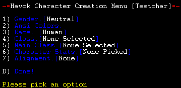

|

Newbie
Guide: Creating a Character
Once you have connected to
Havok, you will be confronted with the login screen, which features
ASCII art intended to resemble the main graphic to the left.
Creating a character is pretty straight-forward, but serious players
will find that there is a lot of information to understand, so we'll
go through it step by step.
What is thy name?
When you see this question, it is time to come up with a name
for your character, if you haven't already. We have a few
rules on Havok about player names, which are intended to preserve
the fantasy atmosphere for everyone to enjoy.
Rule 1: Your name must be compatable
with a fantasy setting, but it can be a "real-world" name.
Rule 2: No names of famous fantasy characters.
This includes characters from mythology as well as more modern ones,
so for instance, the names Drizzt and Bilbo are not okay.
Rule 3: It should be a name that someone's (fantasy)
mother might actually name their child.
Once you choose your name, it will ask for a password.
Don't forget it.
Would you like to have ansi colors?
Ansi color codes are how Havok describes colors to your MUD
Client. Using colors is highly recommended. Once you're
in the game, you can switch back and forth by typing
set ansi disable or
set ansi enable.
Havok Character Creation Menu
The next thing you see will be this:

Gender
This is either male or female, obviously.
Race
All of Havok's player races are described on the
Races page. That page lists
detailed information, including racial bonuses/penalties, which
classes/multiclasses each race can engage in, and maximum stats for
each.
Class
Every character's gotta have some class. Your character class
describes what sort of character you have. To help you choose
which class you'd like, our Classes
page describes each of them in detail.
Main Class
Every character has a main class. If your character has
only one class, s/he is called 'single-classed', and her class will
be her main class. If your character has two or three classes,
s/he is called 'multi-classed', and you'll have to decide which of
her classes will be her main class.
A main class confers certain bonuses to the character.
In-game, this is intended to represent special skill in that class,
due to your character focusing on it. Each main class offers a
different set of bonuses from the others, so choose well.
Character Stats
There are six different character stats on Havok. They
are:
Strength, which determines how much weight you can lift, and
how hard you can hit things.
Intelligence,
which determines magic-point regeneration rates, as well as how
quickly you can learn new spells and skills.
Wisdom, which
determines how many magic-points you get, as well as how many
training sessions you get each level.
Dexterity,
which determines how agile and quick your character is.
Constitution,
which determines how healthy your character is, and how many
health-points s/he has.
Charisma,
which determines how likable you are. This has an affect on
the types of creatures you can summon, and how many, and also how
much gold shopkeepers will charge you for their services and goods.
When you roll your stats, you won't see numbers. You will
see a list of little arrows which represent rough levels. The
most arrows a given attribute can get is 9.
Also, keep in mind, Havok uses an infinite reroll system, so you
can feel free to roll your character as long as you like.
Alignment
Every character must choose an alignment. Your
character's alignment describes how good or evil s/he is. The
alignment you choose is not permenant: it can be changed through
your actions in-game. The three alignments are
Good, Neutral, and
Evil, although some classes are
restricted. For instance, Paladins can only be good-aligned,
while Necromancers can only be Evil.
<<<Back
©2004
HavokMUD
|